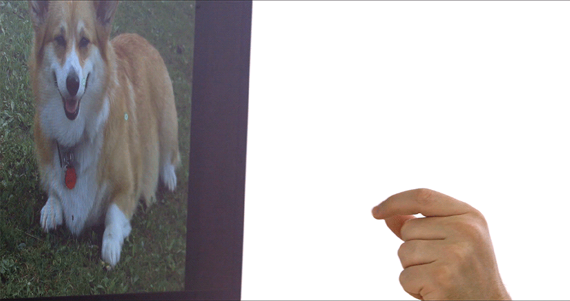
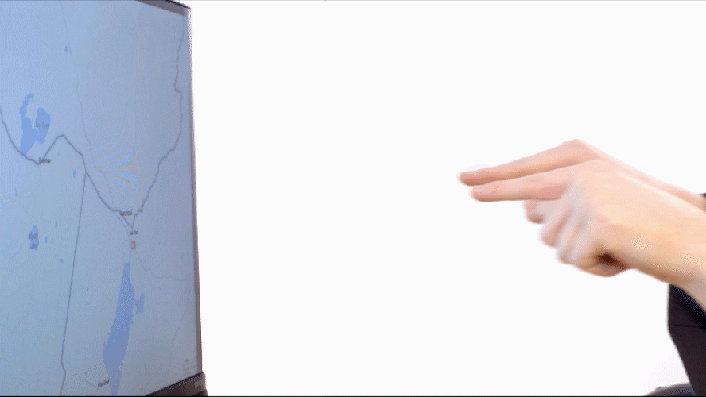
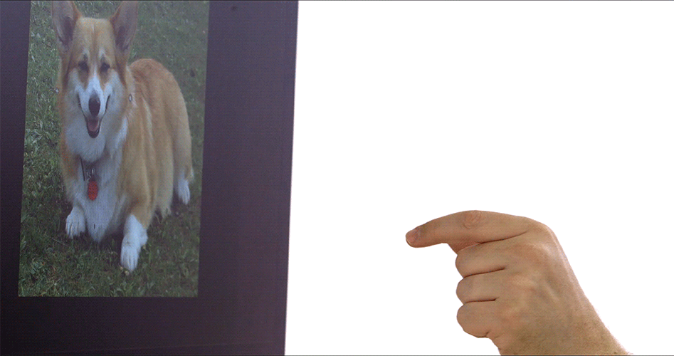

General Tips & Advice
- By moving a finger forward you can make it active, which will turn the cursor green.
- Engage three or more fingers and swipe to trigger expose or switch spaces. Orienting your hand vertically and swiping is also another way to switch spaces.
- The Leap Motion Controller is very sensitive. Make small movements to be relaxed and precise.

General Tips & Advice for Clicking
- Move your finger towards the screen until the cursor turns green, then move back promptly (as if tapping the air or an invisible touch screen).
- Try to make your movements gentle; strong motions work, but are more difficult to aim.
- Try resting your elbow while clicking for maximal comfort.
General Tips & Advice for Scrolling
- Move two fingers (on one hand) towards the screen until the central cursor turns green, then move your fingers horizontally or vertically to scroll in that direction.
- When you want to stop scrolling just move your fingers back a little.
- If the cursor reaches the edge of the screen it will let go and fling.

General Tips & Advice for Zooming with One Hand
- Make sure your fingers are both horizontal. The Leap Motion Controller cannot detect if one finger is above the other (this currently makes vertically oriented pinches difficult).
- Move both fingers forward towards the screen until the central cursor turns green. Then pinch in or out to zoom in or out and when you are done move your hand backward a little.
- You can do repeated zooms by moving your hand forward and backward in sync with your fingers.

General Tips & Advice for Zooming with Two Hands
- Make sure your hands are next to each other. The Leap Motion Controller cannot detect if one hand is above the other.
- Move both fingers forward towards the screen until the central cursor turns green. Then pinch in or out to zoom in or out and when you are done move your hands backward a little.
- You can do repeated zooms by moving your arms as if you are swimming through the air. Swim forward to zoom in. Swim backward to zoom out.

General Tips & Advice for Rotating
- Make sure your fingers are visible from the viewpoint of the Leap Motion Controller.
- Move both fingers forward towards the screen until the central cursor turns green. Then twist your fingers to rotate and when you are done move your hand backward a little.
- You can do repeated rotations by moving your hand forward and backward in sync with your fingers.